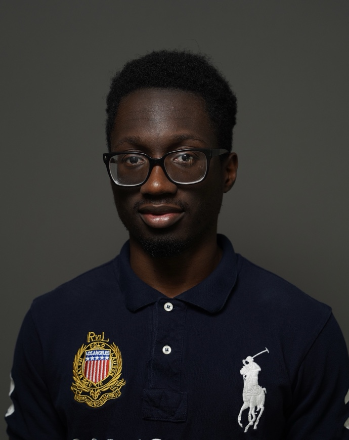

Launched this website as a living record of research and project work.
Electrical & Computer Engineering · Carnegie Mellon University
Ore Abolade
I'm currently an M.S. student in Electrical and Computer Engineering at Carnegie Mellon University, advised by Sebastian Scherer. I work across computer vision, robotic perception, multimodal sensing, and Physical AI—with a growing focus on robotic reasoning for real-world autonomy. My work began in computer vision and robotic perception, then expanded toward Physical AI and robotic reasoning for general-purpose robots that can understand and act in real-world environments.

Academic Journey
- B.S. in Electrical and Computer EngineeringCarnegie Mellon University · Minor in Artificial Intelligence
Projects & Research
Robotic Reasoning Models for Physical AI
A modular, robot-agnostic personal project for embodied reasoning and supervised execution.Aug. 2026–PresentOverview ↗Cross-Modal Uncertainty for RGB–Thermal VO
Investigating relative modality reliability for robust visual odometry in degraded environments.Two-semester M.S. projectOverview ↗Investment Autopilot Harness
Private system combining quantitative methods with approval-gated portfolio operations.Jul. 2026–PresentOverview ↗Shade AI
Autonomous, vision-guided beach umbrella · CMU capstoneJan. 2026–May 2026Overview ↗Pepper Exercise Coach
A socially assistive robotics project to which I contributed.Aug. 2024–May 2025Overview ↗Simulating Learners with GPT-4 for Parsons Problems
A past exploration of generative models in computing education.Aug. 2023–May 2024Overview ↗Updates
Contact
Email:oabolade@andrew.cmu.edu
Phone number:315-632-5553